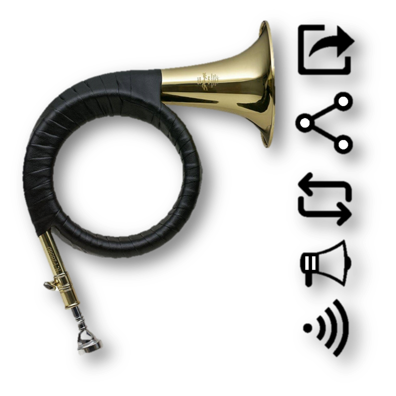
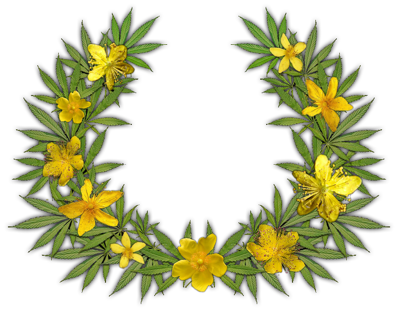

Epithets and Attributes
If you notice man with horn and wand, wearing herbal wreath on his head, maybe it’s Delomemat himself, but maybe you should stop doing drugs.
| Image | Title | Description |
|---|---|---|
|  | Horn |
Атрибут глашатаев, который в наше время существует в виде share/repost кнопок. Герольды трубили в рог при любом удобном случае в честь торжества, начала или окончания войны и т. д. Символизирует распространение информации. |
|  | Wreath |
Венок из любимых трав Деломема это его постоянный головной убор. Именно из-за букета зверобоя и конопли Деломем всегда позитивно настроен и смотрит на мир с улыбкой. Такое же отношение к миру проповедует он и для мемоделов, призывая их ко всему относиться менее серьезно («на похуй»). |

|
Wand |
Палка –копалка, которая делает из ничего что-то. Жезл это один из главных атрибутов Деломема, которым он указывает направление мысли мемоделам. Как фаллический символ подразумевает распространение мемов-генов. |
| X |
Какого-то единого символа это божество не имеет, так как все ближайшие планеты разобрали более могущественные небожители. |
|
|
Иногда сюда же причисляют сборник анекдотов, или любой другой источник юморесок, но этот инструмент можно скорее отнести к атрибутам самих мемоделов. |
||